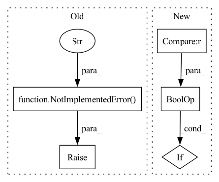

Pattern ID :22939
Before Change
-------
A recorder object.
raise NotImplementedError(f"Please implement the `get_recorder` method." )
def list_recorders(self):
After Change
A recorder object.
// special case of getting the recorder
if recorder_id is None and recorder_name is None :
if self.active_recorder is not None:
return self.active_recorder
recorder_name = self._default_rec_name
In pattern: SUPERPATTERN
Frequency: 3
Non-data size: 5
Instances Fragment ID: 72875382
Project Name: microsoft/qlib
Commit Name: 447fed8e54be6bbb2f993415da5a2e4d04024942
Time: 2021-03-16
Author: dw1920@nyu.edu
File Name: qlib/workflow/exp.py
M Class Name: Experiment
N Class Name: Experiment
M Method Name: get_recorder(4)
N Method Name: get_recorder(4)
M Parent Class:
N Parent Class:
M File Name: qlib/workflow/exp.py
N File Name: qlib/workflow/exp.py
M Start Line: 152
M End Line: 152
N Start Line: 155
N End Line: 167
Before Change
elif isinstance(segments, slice):
return self._prepare_seg(segments, **fetch_kwargs)
else:
raise NotImplementedError(f"This type of input is not supported" )
// helper functions
@staticmethod
def get_min_time(segments):After Change
if isinstance(segments, str) and segments in self.segments:
return self._prepare_seg(self.segments[segments], **seg_kwargs)
if isinstance(segments, (list, tuple)) and all(seg in self.segments for seg in segments) :
return [self._prepare_seg(self.segments[seg], **seg_kwargs) for seg in segments]
// 2) Use pass it directly to prepare a single seg Fragment ID: 72875365
Project Name: microsoft/qlib
Commit Name: da48f42f3f35bbbbe9c00c23831a80409a4a13ab
Time: 2022-01-20
Author: you-n-g@users.noreply.github.com
File Name: qlib/data/dataset/__init__.py
M Class Name: DatasetH
N Class Name: DatasetH
M Method Name: prepare(4)
N Method Name: prepare(4)
M Parent Class: Dataset
N Parent Class: Dataset
M File Name: qlib/data/dataset/__init__.py
N File Name: qlib/data/dataset/__init__.py
M Start Line: 229
M End Line: 236
N Start Line: 236
N End Line: 243
Before Change
-------
An experiment object.
raise NotImplementedError(f"Please implement the `get_exp` method." )
def delete_exp(self, experiment_id=None, experiment_name=None):
Delete an experiment.After Change
An experiment object.
// special case of getting experiment
if experiment_id is None and experiment_name is None :
if self.active_experiment is not None:
return self.active_experiment
// User don"t want get active code now. Fragment ID: 72875379
Project Name: microsoft/qlib
Commit Name: f476ada22d9ea7a050ee5e01465da3bcc6561d7e
Time: 2020-11-21
Author: afe.young@gmail.com
File Name: qlib/workflow/expm.py
M Class Name: ExpManager
N Class Name: ExpManager
M Method Name: get_exp(4)
N Method Name: get_exp(4)
M Parent Class:
N Parent Class:
M File Name: qlib/workflow/expm.py
N File Name: qlib/workflow/expm.py
M Start Line: 131
M End Line: 131
N Start Line: 132
N End Line: 148